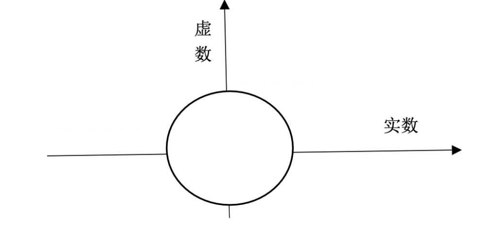

线性代数笔记(二十七)——复数矩阵与FFT
这一节延展到复数矩阵，介绍复数矩阵的运算特征，并介绍一个重要的复数矩阵：傅里叶矩阵。此外，还着重介绍了一种快速计算傅里叶变换的方法：快速傅里叶变换（FFT），它显著地降低了运算量。
复数矩阵与FFT
对于向量中的分量，如果包含虚数的话，很明显，针对实数域来计算长度内积的公式不再适用，我们需要对分量先取共轭，再转置相乘，才能避免谬误。
比如\(\begin{bmatrix}1 \\ i\end{bmatrix}\)向量，传统的计算将得到模长为0，显然有误，它在两个方向上都有分量，实际长度应为\(\sqrt 2\)。
对复数向量\(\begin{bmatrix}z_1 \\ z_2 \\ z_3 \\ ... \\ z_n\end{bmatrix}\)，定义\(|z|^2=z^Hz=\bar z^Tz\)。这里的\(H\)表示Hermition，即共轭转置。复数向量的内积\(=y^Hx=\bar y^Tx\)。
对称阵
对于复数矩阵来说，对称阵的定义也要做类似的转变，联系上面内积的处理方法，复数矩阵中取共轭与转置往往是同步的，实际上，复数对称矩阵的定义也如法炮制：若\(\bar A^T=A\)，则\(A\)为对称阵。
例如，对于矩阵：
\[ \begin{bmatrix} 2 & 3+i \\ 3-i & 5 \end{bmatrix} \]
主对角线上必须是实数，因为取共轭翻转后，元素不能变。沿着主对角线的元素必须共轭，因为相当于沿着对角线彼此互换了位置，取共轭互换前后元素要一致。上述的二阶复数矩阵就是一个对称矩阵，满足\(A^H=A\)。它的特征值皆为实数，且特征向量彼此正交。
推广到特征向量正交这一概念，对一组复数向量\(q_1,q_2,...,q_n\)，且\(\bar q_i^Tq_j=\left\{\begin{array}{rcl}0 & i\neq j \\ 1 & i = j\end{array} \right.\)，它们是一组标准正交基。构成矩阵\(Q\)，此时有\(Q^HQ=I\)，这样的\(Q\)矩阵被称为：酉矩阵。
傅里叶变换
傅里叶矩阵\(F_n\)就是一个经典的酉矩阵：
\[ F_n=\begin{bmatrix} 1 & 1 & 1 & ... & 1 \\ 1 & w & w^2 & ... & w^{n-1} \\ 1 & w^2 & w^4 & ... & w^2{n-1} \\ ... & ... & ... & ... & ... \\ 1 & w^{n-1} & w^2{n-1} & ... & w^{(n-1)^2} \end{bmatrix} \]
其中\(w^n=1,w=e^{i2\pi /n}=cos(2\pi / n) + isin(2\pi / n)\)。

\(w\)就反应在这个复数空间的单位圆上，\(n\)就表示将圆等分成\(n\)份，分别为:\(w,w^2...w^n\)。
那么对于4阶傅里叶矩阵（也就是4等分）来说，此时\(w=e^{i2\pi /4}=i\):
\[ F_4=\begin{bmatrix} 1 & 1 & 1 & 1 \\ 1 & i & -1 & -i \\ 1 & -1 & 1 & -1 \\ 1 & -i & -1 & i \end{bmatrix} \]
显然，该矩阵各列向量彼此正交。还可以挖掘出其他有用的性质：\(F_4^HF_4=4I\)。可以很方便的找到\(F_4\)的逆。
快速傅里叶变换
我们发现对\(w\)的幂运算实际上就是在单位元上转圈，那么推广到更高阶的傅里叶矩阵，我们还可以发现，高阶与低阶矩阵之间彼此也可以建立关联，\(F_6\)和\(F_3\)有着千丝万缕的联系，\(F_48\)和\(F_4\)有着联系，以此类推。具体以\(F_{64}\)和\(F_{32}\)为例，由于\(w_{32}=(w_{64})^2\)，因此有：
\[ \begin{bmatrix} F_{64} \end{bmatrix}=\begin{bmatrix} I & D \\ I & -D \end{bmatrix}\begin{bmatrix} F_{32} & 0 \\ 0 & F_{32} \end{bmatrix}\begin{bmatrix} P \end{bmatrix} \]
置换矩阵\(P\)分割奇偶行，对角矩阵\(D=\begin{bmatrix}1 \\ & w \\ & & w^2 \\ & & & ... \\ & & & & w^{31}\end{bmatrix}\)用来修正分割了奇偶行的矩阵，使其称为对角的两个\(F_32\)的结构。
以4阶矩阵为例，置换矩阵\(P=\begin{bmatrix}1 & 0 & 0 & 0 \\ 0 & 0 & 1 & 0 \\ 0 & 1 & 0 & 0 \\ 0 & 0 & 0 & 1\end{bmatrix}\)，先陈列奇数行，再陈列偶数行。
对角阵\(D\)由\(w\)的幂构成，可以通过验证发现，构造的左侧矩阵对奇偶行分割后的矩阵修成了\(F_{64}\)。
注：这里的证明比较麻烦，教授没有在课上给出，通过简单的\(F_6\)和\(F_3\)来验证发现确实正确。
通过将64阶矩阵降级成32阶，我们大大节省了计算量，原本的64阶矩阵我们需要计算\(64*64\)次，而经过FFT，则计算量简化到了\(2*32*32+32\)次，加号前者是计算两个\(F_{32}\)的计算量，而后者则是\(D\)的计算量，一般称之为修正项的计算量。
32阶还可以继续降级成16阶，如此递归下去，可以进行\(\log_{2}{64}=6\)次分解，最终只剩下修正量的计算。因此，最终的计算量即：\((n/2)\log_{2}{n}\)次，随着\(n\)的增大，对数时间复杂度所能起到的效果越显著。